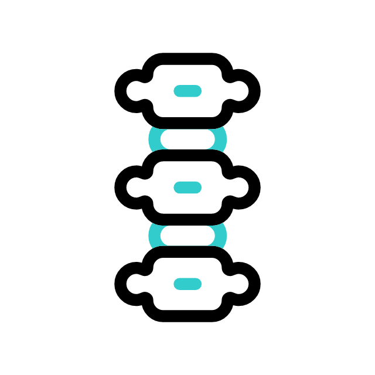
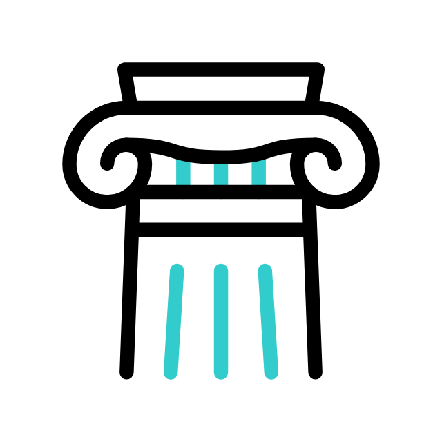
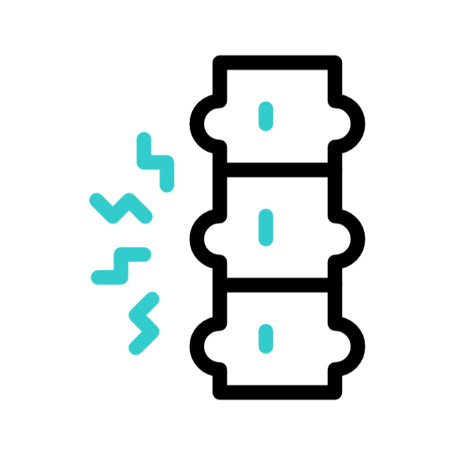

Care

At Collins Chiropractic we understand how pain, whether it's in your neck, back or other joints, can disrupt your life, limiting your mobility and affecting your overall well-being. Our aim is to work closely with you to achieve your goals.
The state of our health can significantly influence our perspective on life. Having optimally functioning joints and muscles brings numerous benefits, such as improved mobility, reduced pain, and greater freedom to engage in the activities you enjoy.
Supporting Health
Our health is shaped by various factors, including habits, postures, experiences with trauma and stress, and dietary choices. Lifestyle contributors to health and wellbeing include looking after our physical health, mental health, sleep habits as well as having healthy relationships, minimising harmful substances and healthy eating habits. The good news is that these factors are not fixed and can be positively influenced with appropriate support and encouragement.
The Spine
The spine is a remarkable structure with diverse and sometimes conflicting responsibilities. It must be both strong enough to protect the spinal cord, which connects the brain to the body, and flexible enough to accommodate a wide range of human movements. Maintaining this delicate balance is where chiropractic care plays a vital role.
History
Nearly 2500 years ago, Hippocrates (who is sometimes called the father of western medicine) said "look to the spine for the cause of disease", and even today, although we realise that there are many other factors involved, a properly functioning musculoskeletal and nervous system is one of the foundations upon which optimal human movement depend. Today chiropractors, like osteopaths, physiotherapists and other musculoskeletal therapists recognise the importance of maintaining movement for easing discomfort and allowing for involvement in daily activities.
Chiropractic Focus
Chiropractors focus on the whole musculoskeletal system, particularly the spine and pelvis, using specific spinal manipulations, also known as 'adjustments,' to correct dysfunctions. These adjustments have two primary effects: mechanical, enhancing joint mobility, and neurological, stimulating sensory receptors that provide vital feedback to the brain and spinal cord.
This stimulation helps reduce muscle spasms, modulate pain sensations, and improve movement, coordination, and posture. Some people have reported additional benefits of being more comfortable, such as better sleep, increased calmness, and improved alertness. Chiropractic treatment encompasses are range of techniques and manipulation is one part of this. Not all conditions require manipulation and other techniques can be used for example, soft tissue work, joint mobilisation, stretches, education, particular exercises, acupuncture and ultrasound.
Chiropractic care offers a drug and surgery-free approach to treating joint, bone, and muscle problems and their impact on well-being. Chiropractors prioritise patient-centred care, utilising shared decision-making and tailored communication strategies to meet each patient's unique needs and preferences.
Education and Background

Chiropractors receive specialised education to adapt spinal manual therapy to suit patients of different ages and conditions. Chiropractic treatment is based on the scientific understanding that the body is a self-regulating, self-healing organism, controlled by the brain, spinal cord, and nerves throughout the body. All chiropractors in the UK receive a high level of training graduating from university after a 4- or 5-year degree. Chiropractors in the UK must be registered with the General Chiropractic Council.
Health Management

The practice of chiropractic focuses on the relationship between the structure of the body, primarily the spine and pelvis, and its function, as coordinated by the nervous system, to promote and restore health.
At Collins Chiropractic, we can assist with various issues, including back pain, joint pain, osteoarthritis-related discomfort, muscle spasms, sporting injuries, headaches, and more.
Our aim is to help you prevent and manage these conditions, promoting a healthier life and comfortable movement.
Care
Support
Spine
History
Chiropractic Focus
Background
Health Management